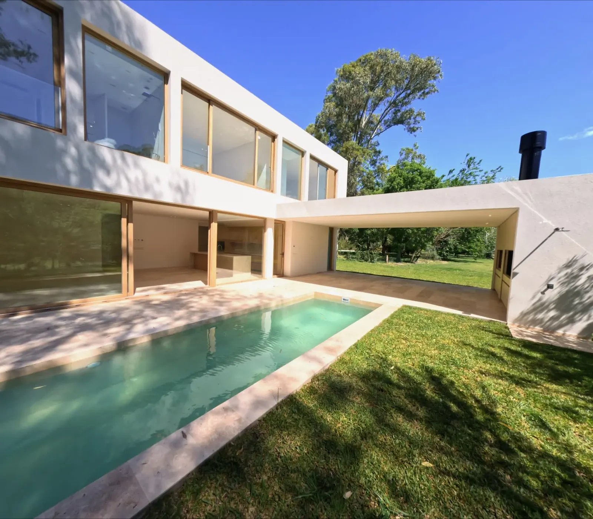
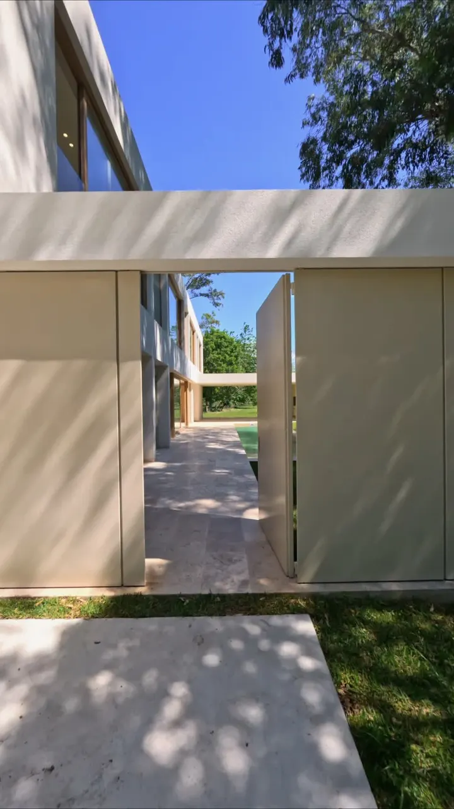
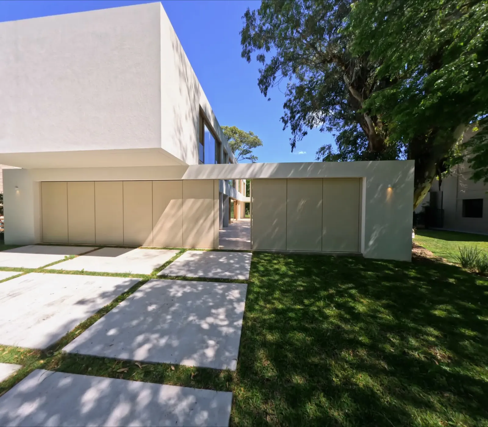

i.
Un solo plano
Sin cortes ni efectos. El recorrido continuo es la forma más honesta de explicar cómo se habita un espacio.

Planos secuencia y cine aéreo para residencias de autor. Recorridos continuos que leen la luz, la escala y la intimidad de cada espacio.
La fachada se presenta despacio, como una primera frase.
Entre dos volúmenes blancos, la casa se abre.
Travertino, jardín y una lámina de agua bajo la luz de la tarde.
El plano secuencia FPV ininterrumpido con diseño sonoro espacial en alta definición.
Manifiesto
Filmamos una casa del mismo modo en que se la proyecta: con paciencia, con luz natural y en un solo recorrido. Cada movimiento tiene una intención; cada segundo, una razón espacial.
Sin cortes ni efectos. El recorrido continuo es la forma más honesta de explicar cómo se habita un espacio.
Rodamos en la franja horaria que mejor describe los materiales. La hora del día se elige antes que la cámara.
Volamos a la altura de la mirada. La arquitectura se entiende caminándola, no sobrevolándola.


El recorrido de fachada e ingreso revelando las texturas bajo la luz natural.
El encuadre se desplaza lateralmente liberando el espacio de lectura. Los planos de hormigón y piedra dialogan con la vegetación antes de descubrir el acceso.
La proyección cruza el eje arquitectónico y se expande al aproximarse a la puerta principal de doble altura, conduciendo la mirada hacia el interior.
Un único plano FPV que entra desde la calle arbolada, atraviesa el umbral entre los dos volúmenes y desemboca en la galería y el espejo de agua. Sin cortes. Guiado por la luz de media tarde.



La física detrás del plano secuencia continuo: aceleración milimétrica, cota de altura constante e inmersión de vuelo continuo.
El plano secuencia FPV ininterrumpido sobre las ruinas y el agua.
Un plano secuencia ininterrumpido que enlaza el exterior, el umbral y los ambientes más nobles de la casa.
Entorno, orientación y escala del paisaje. La obra situada en su territorio antes de llegar al detalle.
Fotogramas y tomas aéreas de alta resolución para monografías, prensa especializada y catálogos.
Cortes 9:16 pensados desde la coreografía del vuelo, sin perder encuadre ni intención.
Una misma pasada cinematográfica en formato abierto. Sin comprometer la resolución: el máster panorámico para cine y web convive con la pieza vertical nativa para pantallas móviles.

De la intimidad de la arquitectura a la apertura del paisaje. Un plano continuo en movimiento cinematográfico.
La luz natural recorriendo la volumetría.
La salida al exterior, hacia un paisaje abierto.
La transición continua de la arquitectura al horizonte abierto.

Un catálogo dinámico de rodajes complementarios, exploraciones de luz y fragmentos arquitectónicos. Cada toma se reproduce en flujo continuo al recorrer la galería.


Recorremos el sitio, estudiamos la orientación y la incidencia de la luz, y definimos la hora exacta de rodaje.
Diseñamos la trayectoria plano por plano: ejes, velocidades y el orden en que cada ambiente se revela.
Una jornada técnica en la franja de luz elegida. Repetimos la toma hasta que la trayectoria es exacta.
Etalonaje cinematográfico fiel a los materiales y entrega multiformato en 4K, horizontal y vertical.
Entendió la casa mejor que muchas de las fotografías que teníamos de ella. El recorrido transmite exactamente lo que se siente al entrar.